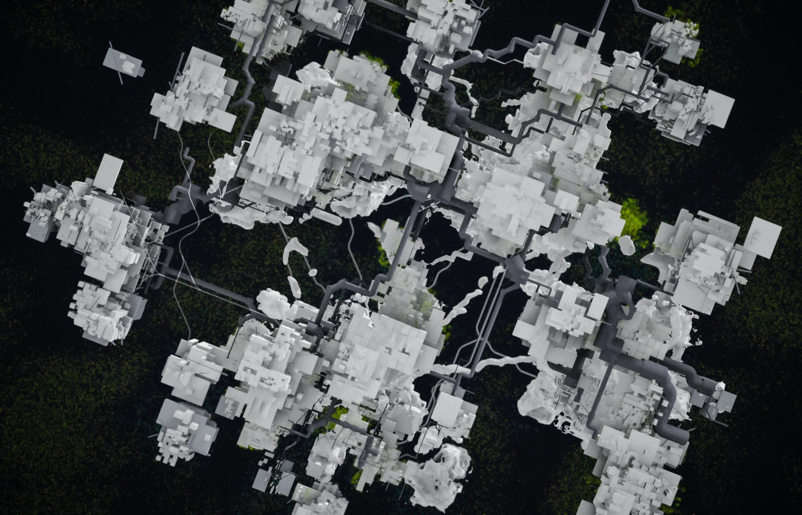
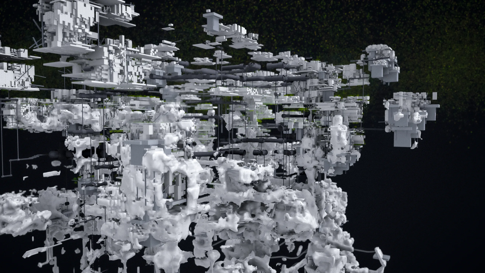
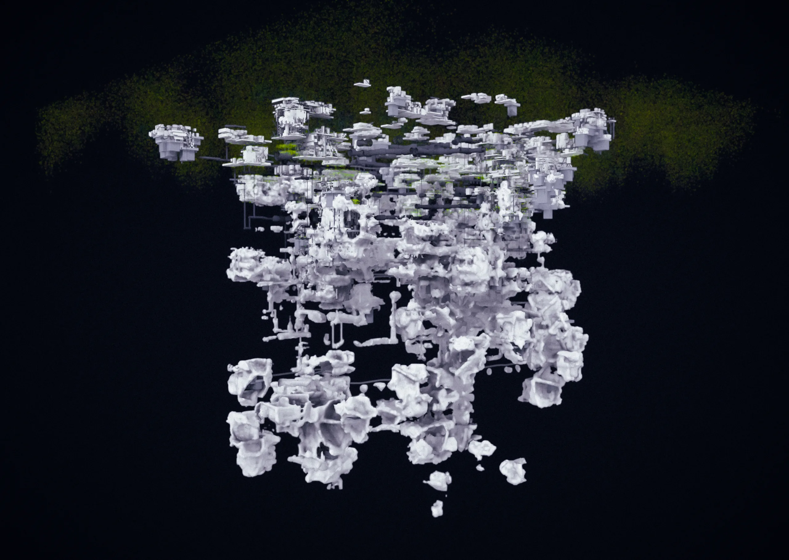

Three renders taken from the wall view of the work on 2026-11-03, after a crowd of bots had lived in it for about half an hour. Nothing here was modelled: every slab, path, pipe and layer was folded from the event log — who stayed where, who walked where — by the rules the work runs on. Click an image to see it large; the links download the full-size files.

01 · THE GROUND FROM ABOVE · 2026-11-03 · 7671 × 4325 px
Slabs where several people stayed in one place and time; pipes laid along the paths between them; vegetation only where no one walked. Everything human is achromatic — colour belongs to nature.위에서 본 땅 — 여럿이 머문 자리의 슬래브, 그 사이 길을 따라 깔린 배관, 아무도 걷지 않은 곳의 식생. 인간의 흔적은 무채색, 색은 식생에만.


02 · INSIDE THE COLUMN · 2026-11-03 · 6729 × 4325 px
The present's plates and pipes above; beneath them the strata where buildings have fused together and gone bone-like — the fossil bands. Twenty seconds of real time is one layer.기둥 안 — 위는 현재의 판과 배관, 아래는 건물들이 엉겨 붙어 뼈처럼 된 지층. 실시간 20초가 한 겹.


03 · THE WHOLE COLUMN · 2026-11-03 · 6092 × 4325 px
The living surface, with its haze of vegetation, and the whole record hanging beneath it: what a future would excavate, seen all at once — the view the wall gives and the headset never does.기둥 전체 — 식생의 안개가 낀 살아 있는 표면과 그 아래 매달린 기록 전부. 미래가 발굴할 것을 한눈에 — 벽은 주고 헤드셋은 주지 않는 시야.